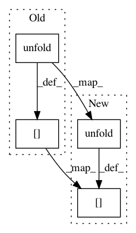

a5bd6a5eb3b78fe02c34de7db53efe253e85ecb9,tensorly/decomposition/_tucker.py,,non_negative_tucker,#Any#Any#Any#Any#Any#Any#Any#,125
Before Change
for iteration in range(n_iter_max):
for mode in range(tensor.ndim):
B = tucker_to_tensor(nn_core, nn_factors, skip_factor=mode)
B = unfold(B, mode).T
numerator = T.dot(unfold(tensor, mode), B)
numerator = T.clip(numerator, a_min=epsilon, a_max=None)
denominator = T.dot(nn_factors[mode], T.dot(B.T, B))
denominator = T.clip(denominator, a_min=epsilon, a_max=None)
nn_factors[mode] *= numerator / denominator
numerator = tucker_to_tensor(tensor, nn_factors, transpose_factors=True)
numerator = T.clip(numerator, a_min=epsilon, a_max=None)
After Change
for iteration in range(n_iter_max):
for mode in range(T.ndim(tensor)):
B = tucker_to_tensor(nn_core, nn_factors, skip_factor=mode)
B = T.transpose(unfold(B, mode))
numerator = T.dot(unfold(tensor, mode), B)
numerator = T.clip(numerator, a_min=epsilon, a_max=None)
denominator = T.dot(nn_factors[mode], T.dot(T.transpose(B), B))
denominator = T.clip(denominator, a_min=epsilon, a_max=None)
nn_factors[mode] *= numerator / denominator
numerator = tucker_to_tensor(tensor, nn_factors, transpose_factors=True)
numerator = T.clip(numerator, a_min=epsilon, a_max=None)
In pattern: SUPERPATTERN
Frequency: 3
Non-data size: 4
Instances
Project Name: tensorly/tensorly
Commit Name: a5bd6a5eb3b78fe02c34de7db53efe253e85ecb9
Time: 2017-09-09
Author: jean.kossaifi@gmail.com
File Name: tensorly/decomposition/_tucker.py
Class Name:
Method Name: non_negative_tucker
Project Name: tensorly/tensorly
Commit Name: a5bd6a5eb3b78fe02c34de7db53efe253e85ecb9
Time: 2017-09-09
Author: jean.kossaifi@gmail.com
File Name: tensorly/regression/tucker_regression.py
Class Name: TuckerRegressor
Method Name: fit
Project Name: tensorly/tensorly
Commit Name: 0bbba71ed7fa78c58e3c82d7e32626bc7af3f94f
Time: 2018-11-26
Author: asmeurer@gmail.com
File Name: tensorly/decomposition/candecomp_parafac.py
Class Name:
Method Name: parafac